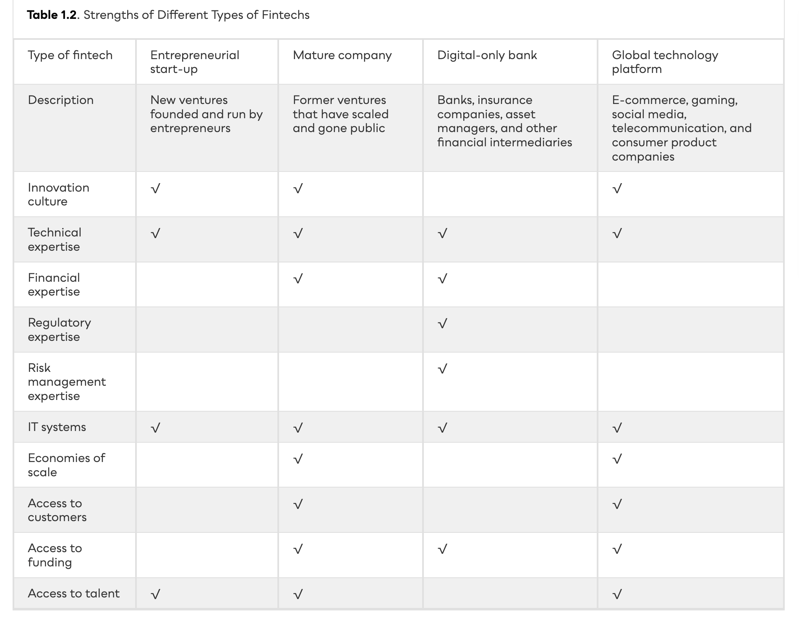

Fintech Defined
A graduate-level analytical framework for financial technology — definitional boundaries, periodisation, and the four-part lens we’ll apply to every firm and market this term.
What is fintech?
The application of digital technology to deliver, augment, or fundamentally redesign financial services — spanning payments, credit intermediation, asset management, risk transfer, and the market infrastructure beneath them.
A trillion-dollar reorganisation of finance.
$1.2T cumulative private capital across 38,000+ deals. Note the cyclicality: 2021 peak (~$240B, ~7,300 deals) vs. 2023 trough ($39B, CB Insights). Discussion: what does the 2022–23 drawdown tell us about market maturity?


Three eras of fintech.
The canonical periodisation (Arner et al. 2015, updated 2020) frames fintech as three overlapping waves — each defined by who controlled the technology and what regulatory bargain prevailed.
Traditional fintech vs. transformational fintech.
Faster horses.
Incumbents optimise existing value chains — JPMorgan $15.3B tech spend (2023), Goldman’s Marcus, DBS digibank. Same activity, lower unit cost.
A different car.
Stripe unbundled merchant acquiring; Ant Group re-bundled payments + credit + wealth (Yu’e Bao: $268B AUM peak). New cost structures create new defaults.

The Lens.
Four analytical moves that map to strategy, regulation, technology, and competitive dynamics. The rest of the course is built on these.

Four questions.
Apply these to any fintech firm before reading their S-1 or pitch deck.
Eight categories of fintech.
Taxonomy aligned with FSB (2017) activity classification. Most firms span 2–3; identify which is load-bearing for unit economics.
Four kinds of firm.
The textbook identifies four types of fintech companies, each with different strengths in innovation culture, technical expertise, customer base, data, scale, capital, and brand.

Ten technologies.
Every fintech firm is built from a subset. For each firm we ask: which of the ten, in what combination, and which is the defensibility bottleneck?
The fintech ecosystem.
Fintechs do not emerge in isolation. They depend on a diverse ecosystem of innovation labs, accelerators (Y Combinator, Level39), technology hubs, investors, regulators, and universities.

The 2024–2026 wave: AI, tokenization, real-time rails.
Fintech 3.0 is being eclipsed by a fourth wave defined by generative AI in the back office, on-chain settlement of regulated assets, and the universal arrival of instant payments.
Stablecoins, RWAs & agent-driven rails.
A second-by-second composition of the post-2024 fourth-wave fintech: dollar-stablecoin settlement scales beyond Visa, BlackRock-anchored RWAs cross $7B, and AI agents start moving money on their own rails.
The 2025 capital rebound — bigger checks, fewer deals.
After the 2023 trough ($113B) and a flat 2024 ($95.5B), 2025 fintech investment rebounded to $116B as exit activity returned. Deal count fell to its lowest since 2017 — capital concentrated in fewer, larger AI-fintech and stablecoin platform rounds.
Global fintech hubs: from Findexable 2020 to 2025.
Slide 11’s 2020 Findexable rankings have aged. The Bay Area still leads, but New York climbed, London held against Brexit drag, and Asia’s rise (Singapore, Bangalore) reshaped the top 10. Mind the Bridge’s Tech Innovation Champions and Statista’s 2024 fintech rankings now tell a more multipolar story.
Stablecoins moved from grey zone to regulated infrastructure.
Slide 08 listed cryptocurrencies and stablecoins as a category — in 2020 there was no jurisdictional rule-book. Between Dec 2024 and Aug 2025, three of the world’s largest financial centres turned stablecoins into licensed activity. Total stablecoin float crossed $320B by Apr 2026; USDT + USDC are >90% of supply, but the issuer perimeter has narrowed to banks & chartered nonbanks.
Incumbents catch up: bank GenAI rollout, 2023→2025.
Slide 05 framed traditional fintech as “faster horses.” Slide 12 quoted the IDC $85B GenAI banking forecast. Two years on, sustaining innovation has actually scaled: every G-SIB now runs production LLMs to tens of thousands of employees. The 2023 baseline is already obsolete.
Financial inclusion.
1.7 billion adults remain unbanked (World Bank) — but two-thirds own a mobile phone. Over the last decade, 1.2 billion gained access primarily via mobile money. M-Pesa, GCash, and bKash demonstrate fintech as infrastructure for economic development.